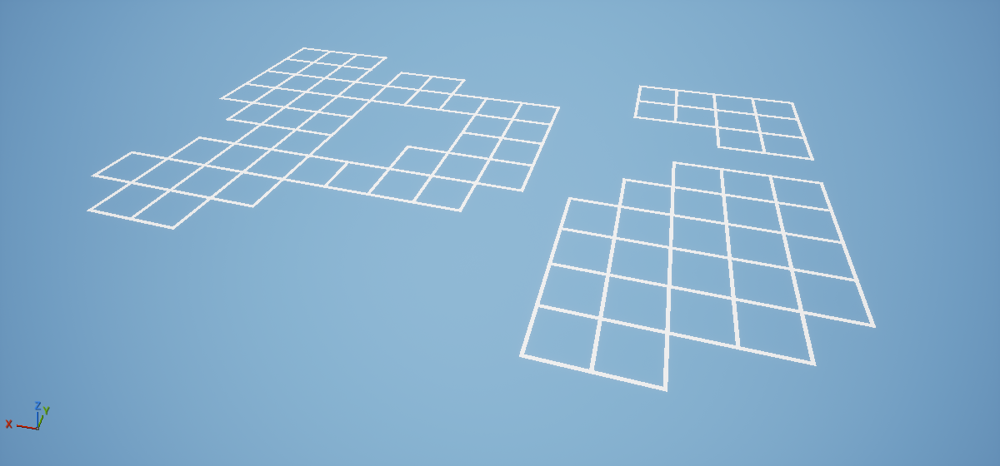
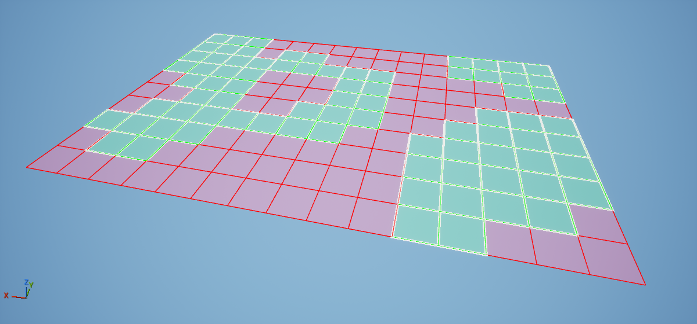
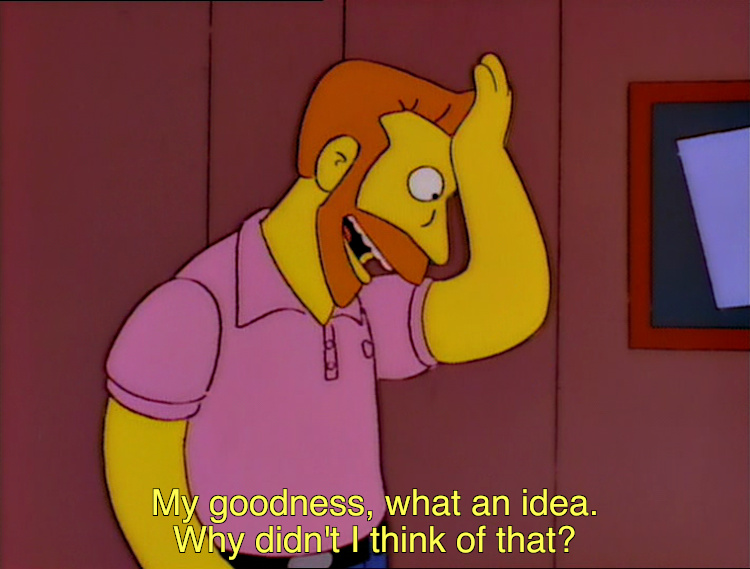
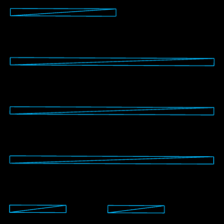
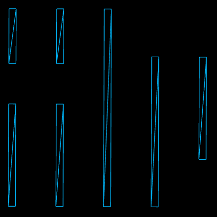
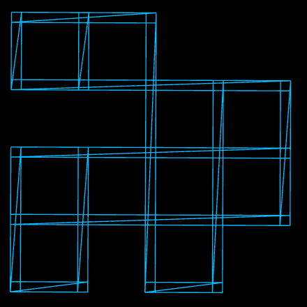
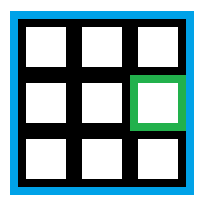
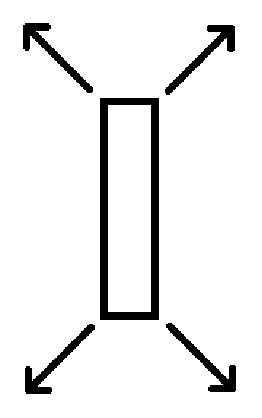

Dynamic Tile Grid

Recently, I decided to begin working on a game I've conceptualized in my head for a while now.
A central mechanic to that game involves being able to place constructs on the tiles of a grid.
The player is only intended be able to build at designated locations, so it needs to be possible to place the grids within the world itself.
Additionally, unlike the typical rectangle shaped grid, I also wanted to be able to pick and choose which tiles are included within the grid, so they can be adapted to the locations they're placed at.
I've been ruminating on what would be a reasonable way of programming this for a while now, and the conclusion I've come to is to throw a
HashMap at the problem.
In short, the HashMap contains items where the key is a 2D coordinate representing a tile on the grid and the value is a reference to the current construct placed on the tile,
which is null if no construct is placed.
The grid itself is made through a Dynamic Mesh.
To generate the geometry of the mesh, I do a foreach loop on the HashMap and create a border for every 2D coordinate.
Part of the reason as to why I chose to use a HashMap is because it makes it easy to tell the class where to not generate a tile,
as all you have to do is remove the Tile/Coordinate from the HashMap!
The other part is because it makes it easy to later on program functionality like placing a construct at a coordinate or checking what is placed at a coordinate,
all with that sweet O(1) lookup time complexity.
Individually adding/removing coordinates/tiles from a HashMap would be quite tiresome, so I also decided to explore if I could make an in-editor tool that allows me to just click a tile
to add or remove it from the HashMap.
Fortunately, all this could be done through Component Visualizers.
The end result looks like this:

Green represents tiles in the HashMap, red represents tiles not in it. Clicking any tile swaps it between green and red.
Overall, visualizers were pretty straight to work with, until they were not.
Drawing a line with the provided PrimitiveDrawInterface
class was the typical: a start coordinate, an end coordinate, and a color.
Drawing a filled rectangle proved a little bit more difficult as the
DrawRectangleFunction
required a MaterialRenderProxy,
a class I hadn't encountered before.
As such, I decided to consult the Unreal API documentation to get answers for questions like:
• What is a MaterialRenderProxy?
• How do I get one?
• Why won't a regular material suffice?
So what are the answers?
Well, according to the all so useful Unreal API documentation, a MaterialRenderProxy is explained as: "A material render proxy used by the renderer."

Beyond that sentence, there was no further explanation to be found.
Eventually, I figured out that it's possible to get a MaterialRenderProxy by just calling the "GetRenderProxy()" function of any material.
Testing a couple for the DrawRectangleMesh function, I found that using any material with "Used with Editor Composting" set to true will work as a MaterialRenderProxy for the function.
Though, you specifically want a material using vertex painting as that is how the color set in the DrawRectangleMesh function is applied
— a fun fact that is NOT mentioned in the documentation and which I found out by digging through the engine code.
Another fun fact: to even have half the functions you can override in
FComponentVisualizer
work, you need to override "virtual bool IsVisualizingArchetype() const" and make it return true —
something that is also conveniently mentioned NOWHERE in the documentation.
Other than the lacking documentation, Component Visualizers work well.
The only disappointment I had is that there doesn't seem to be any function to override for hovering over visualizers, only ones for clicking them.
And, if one is to be so bold and try to use the function that visualizers use internally for providing what is clicked (GetHitProxy),
the engine itself will see that as a personal insult and commit suicide.
So, unfortunately, I didn't really bother going further than that to try and get hover functionality to work since it wasn't really necessary in the first place — it would just be nice to have.




Finally, about the grid itself!
More specifically, how it's presented in the world.
I spent quite some time pondering what I wanted the grid to look like and how I would go about achieving that look.
My first idea was to have every tile generate the geometry for its own borders, resulting in 8 triangles per tile.
The benefit of this approach is that it would make it easy to add/remove or just highlight individual tiles on the mesh.
I ended up not doing this because I found that having lines essentially be "half thickness" just didn't look very appealing when I tried it.
What I ended up doing was the standard approach of drawing long lines of rows and columns which end up forming tiles between them.
This has the benefit of being more performant as it results in significantly less geometry as you only need 2 triangles for each line.
However, the difficult part in my case is that the grid has to be able to have tiles missing within it, so I couldn't just go the easy route of
specifying X amount of columns and Y amount of rows.
I had to figure out an algorithm to traverse between tiles to find out how long each line can be, which wasn't as easy as I thought it would be.
Of course, I could've also achieved the same look with the former approach by just doubling the thickness of the borders outwards and thereby
having the geometry of the tiles overlap, but I wouldn't get benefits of having less geometry.
Also, it would feel like commiting a cardinal sin in the modelling space.

As for the grid shader, initially, I only intended to apply an unlit one and call it a day.
However, while working on the grid system, I came to notice that all outlines in Unreal, and lines drawn with Component Visualizers, are still perfectly
visible no matter how far away you view them from.
That is to say, they scale with distance.
I wanted to replicate that behaviour, and it proved rather easy to do as all that had to be done was to offset the vertices for the lines along their normals
depending on distance/depth.
Of course, prior to this the mesh didn't have any normals set, but this was only a matter of finding the result of a normalized diagonal vector for each corner.
The results can be seen below.
The greatest benefit I would say is that it improves upon aliasing which otherwise becomes much more noticeable with distance (click on the image if it's hard to see).
At this point when working on the shader, I had an idea.
An idea I have no clue as to how I got.
If I am already using normals to offset the vertices in order to scale the lines, would it not be possible to rotate the offset vectors to face the viewer?
Through this, I would be able to have the lines that are drawn essentially be the same thickness regardless of what angle or distance they are viewed from.
This is an idea that is only applicable to in this situation because the lines in the mesh themselves are flat.
I felt absolutely ingenious when I came up with this, as if the spirit of Ben Cloward himself had guided me towards this answer.
The results can be seen below.
This is the current point I am in this project right now.
There were some small visual oddities when I tried rotating the offset vectors, but I've managed to hide them pretty well after some experimentation.
Next I will be working on adding some gameplay functionality to the grid.
Originally I didn't intend to write this much — only a couple words and a picture of the project I had been working on over the weekend
— but I felt inspired wanting to complain about the Unreal documentation.
Drawable Portal

Something I made by combining
this,
this, and
this
because I wanted to see if it was possible.
You've reached the end.


{kind=link}
{kind=link}
{kind=link}